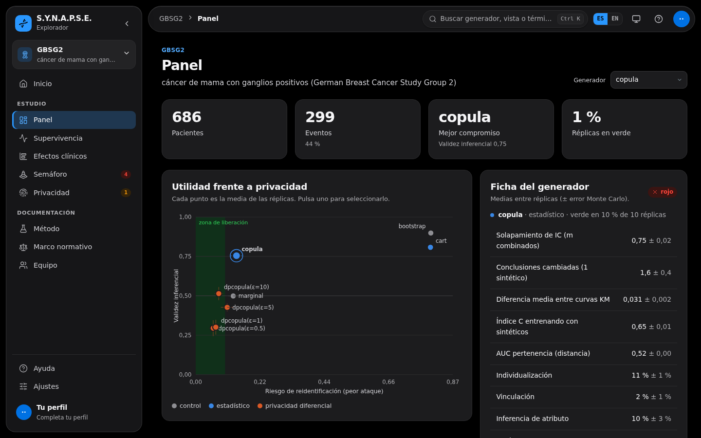

Investigadora principal
Validez inferencial y riesgo de reidentificación de datos sanitarios sintéticos
- Diseño de un estudio de simulación sobre 4 estudios clínicos reales: 8 generadores × 10 réplicas, 320 evaluaciones.
- Validez inferencial con curvas de Kaplan-Meier, modelos de Cox, solapamiento de intervalos y reglas de combinación.
- Hallazgo: ningún generador es a la vez útil y seguro de forma sistemática; la privacidad diferencial con ε ≤ 1 rompe las conclusiones del modelo de Cox.
- Con Yoandy Ramírez Delgado, que lidera los ataques de reidentificación y el marco normativo.
Pythonlifelinesscikit-survivalpandasRGPD · EHDS
